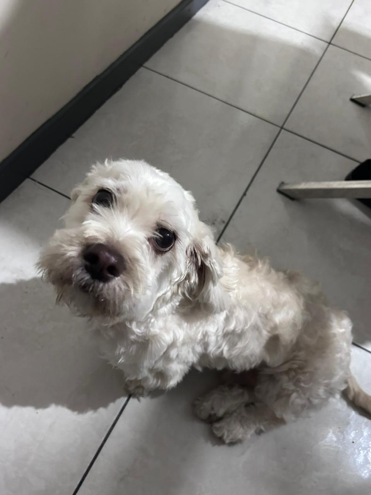
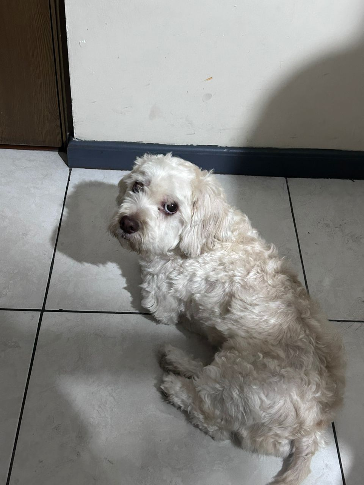
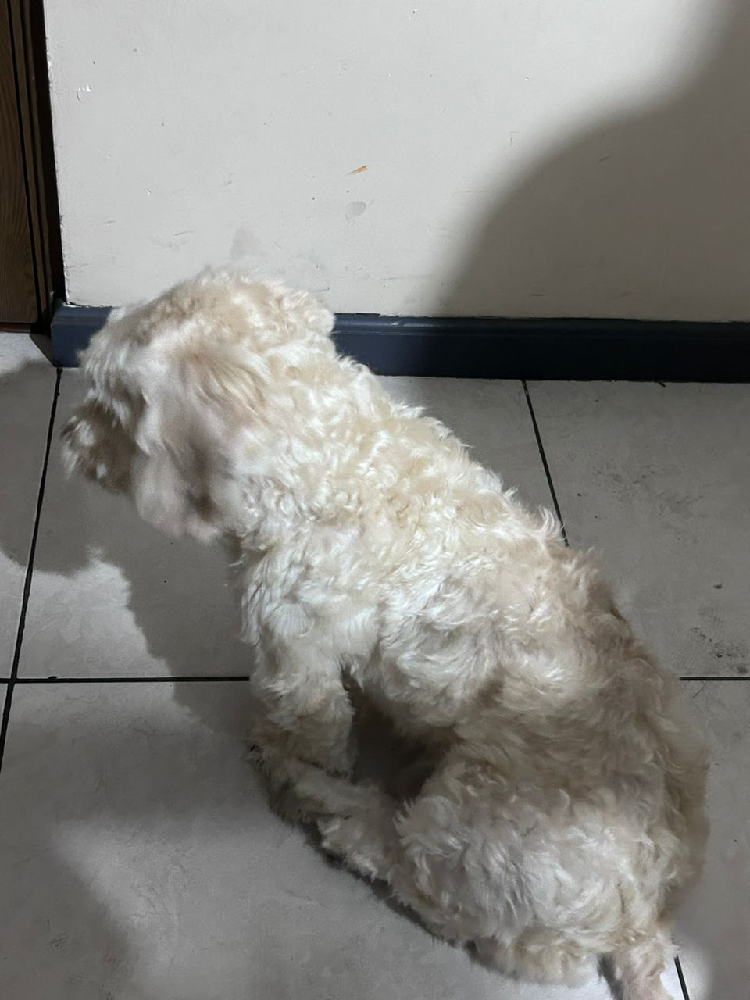

La vida de KEKITO
En un tranquilo barrio limeño, Kekito, un perrito mestizo con manchas marrones y blanco, vive junto a su dueño, Arturo, un diseñador gráfico. Inspirado por el trabajo de Arturo en proyectos políticos, decide lanzarse como candidato a la presidencia del Perú. Con la ayuda de su fiel amigo, Arturo, emprende una campaña ingeniosa y llena de carisma que capta la atención de todo el país.
A medida que la campaña avanza, Kekito se convierte en un fenómeno nacional, ganando el apoyo de miles de peruanos con su carácter adorable y su compromiso con el cambio. Finalmente, llega el día de las elecciones y Kekito emerge como el sorprendente ganador, convirtiéndose en el primer presidente canino del Perú. Junto a Arturo, Kekito implementa políticas progresistas y combate la corrupción, dejando un legado inspirador para las generaciones futuras.
Aunque su mandato es breve, la presidencia de Kekito deja una huella imborrable en la historia del Perú, recordando a todos que la determinación y la audacia pueden llevar a cumplir los sueños más inesperados. Su historia inspira a las personas a creer en el poder del cambio, independientemente de quién lo lidere, ya sea humano o canino.